Independent, reproducible benchmark of the Patrick Nill PVD fair-value range methodology — the 2× Robbins World Cup champion system (Push → Base → Decision, 3-touch confirmation, R≥3, 1% risk) — tested on live public DAX, oil, ES & Nasdaq data with walk-forward, friction ladder, permutation tests and 5 benchmarks. Result: an honest negative result plus 5 hidden-pattern leads for your PhD or trading journal.
CEO summary: if you want the champion’s risk discipline without the myth, clone this, run docker compose run --rm study, open this page, and in 5 minutes you will know exactly what survives costs and what does not — with charts, trades and code to prove it.
Contents: Demo · What you get · User stories · How it works · Results · Hidden patterns · Reproduce · Architecture · FAQ · License
MP4 generated from verified results/equity_DAX_1d.csv by make_demo_assets.py. If video does not play, see GIF below.
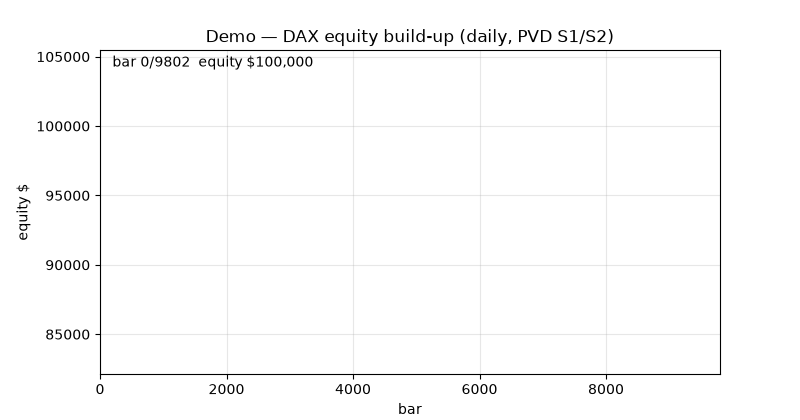
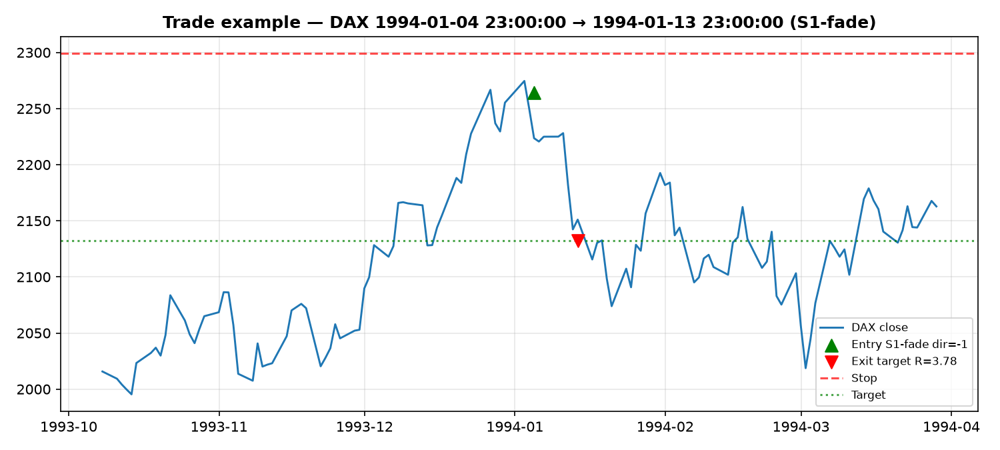
Green ▲ entry (S1/S2), red ▼ exit, dashed red stop, dotted green target. Every trade in results/trades_*.csv has entry/stop/TP/R/MFE/MAE.
docker compose run --rm study # → downloads Yahoo data (cached with manifests) # → detects impulses/bases/signals # → backtests S1/S2/S3 at 1% risk # → writes results/*.csv + figures/*.png PYTHONPATH=src python probe_hidden.py PYTHONPATH=src pytest tests/ -q # 3 passed
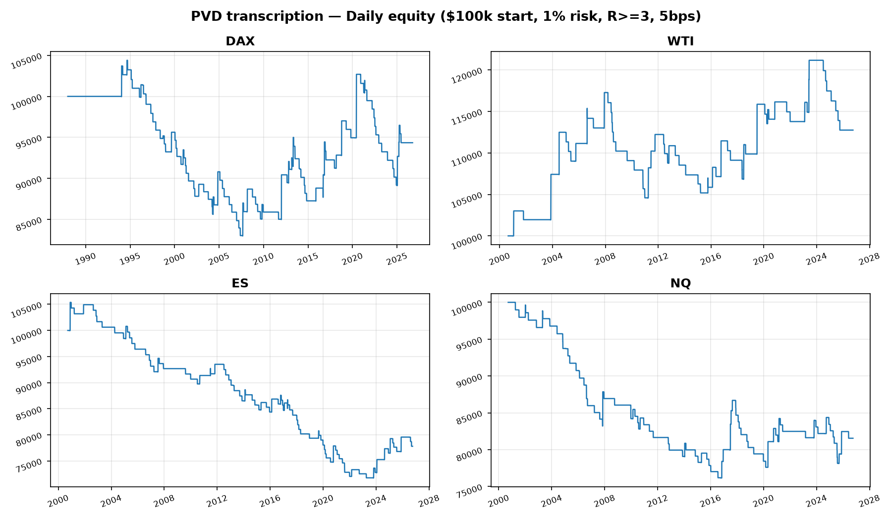
Flat-to-down except WTI nominal +12.7% (still p=0.22, walk-forward unstable). The honest negative result is the point: OHLC-only cannot clone profile/footprint/discretion.
src/nill_pvd/docker compose run --rm study or 3 Python commands. Manifests pin every Yahoo query. Figures auto-saved.docs/PAPER.md drafts the manuscript, roadmap lists 6 thesis chapters (VAH/VAL learning, footprint RCT, session gating…).configs/experiment.yaml to test your own R/stop/session tweaks.ranges.py/strategy.py, add VAH/VAL or footprint, rerun walk-forward + permutation. If T≥2, ≥30/fold, year-stable and friction-proof, you have something.probe_hidden_full.json.PYTHONPATH=src python download_data.py # DAX ^GDAXI 9802d, WTI/ES/NQ ~6570d # + 15m 60d; → data/*.parquet + manifest
from nill_pvd.ranges import * imp = detect_impulse(df) # >2.5 ATR bases = detect_bases(df, imp) # ≥12 bars, 3 touches
from nill_pvd.strategy import build_signals sig = build_signals(df, bases, min_rr=3.0) # S1 fade · S2 breakout · S3 sweep
from nill_pvd.backtest import backtest eq, tr = backtest(df, bases, sig, risk_pct=0.01, fee_bps=5.0) # → equity, R, MFE/MAE, walk-forward…
git clone <your-fork> nill-pvd-worldcup-benchmark-2026 && cd nill-pvd-worldcup-benchmark-2026 docker compose run --rm study # results/: daily_summary.csv intraday_summary.csv walk_forward.csv friction.csv benchmarks.csv figures/*.png # assets/: demo.mp4 demo.gif equity_overview.png trade_example.png # open preview.html in your browser for this beautiful report
No Docker? pip install -r requirements.txt && PYTHONPATH=src python download_data.py && PYTHONPATH=src python run_full_study.py --config configs/experiment.yaml
| Market | n | WR | PF | avgR | PnL$ | Sharpe | MaxDD | perm-p | Final |
|---|---|---|---|---|---|---|---|---|---|
| DAX | 102 | 26.5% | 0.98 | +0.05 | -1,476 | -0.03 | -20.5% | 0.51 | 94,351 |
| WTI | 65 | 30.8% | 1.27 | +0.24 | +13,964 | +0.16 | -10.8% | 0.22 | 112,749 |
| ES | 92 | 22.8% | 0.71 | -0.17 | -18,750 | -0.30 | -31.9% | 0.91 | 77,802 |
| NQ | 85 | 22.4% | 0.73 | -0.16 | -16,057 | -0.24 | -23.8% | 0.90 | 81,554 |
T: DAX -0.08, WTI +0.80, ES -1.42, NQ -1.26 (need ≥2.0). Files: results/daily_summary.csv
| Market | n | WR | PF | PnL$ | Sharpe |
|---|---|---|---|---|---|
| DAX 15m | 32 | 15.6% | 0.45 | -16,618 | -0.89 |
| WTI 15m | 87 | 27.6% | 0.80 | -12,926 | -0.34 |
| ES 15m | 80 | 35.0% | 0.56 | -25,107 | -1.09 |
| NQ 15m | 85 | 34.1% | 0.76 | -14,126 | -0.62 |
| Market | F0 PF | F1 PF | F2 PF | F3 PF | Verdict |
|---|---|---|---|---|---|
| DAX | 2.23 | 1.24 | 2.06 | 0.62 (n=15) | collapse → unstable |
| WTI | 1.56 | 1.28 | 2.66 | 0.00 (0/7) | unstable |
| ES/NQ | never jointly stable | fail | |||
Full: results/walk_forward.csv. Friction: DAX 0bps +$3,248 → 5bps -$1,476 → 20bps -$13,144 (friction.csv).
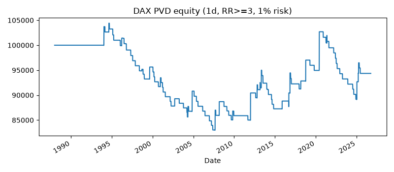
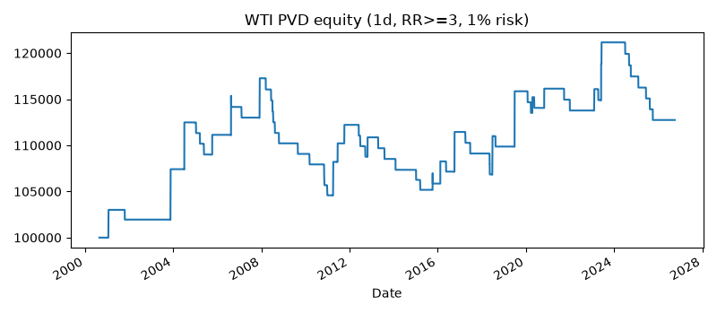
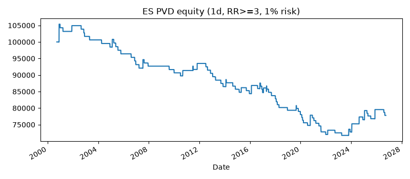
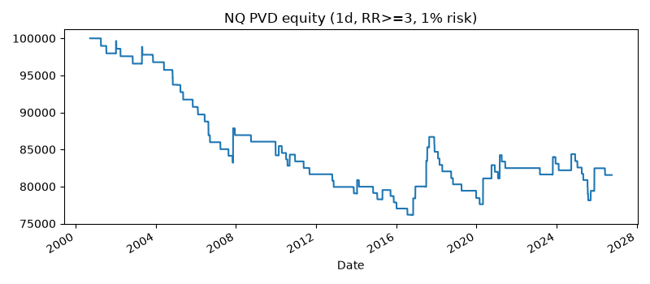
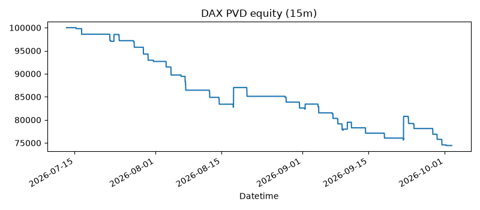
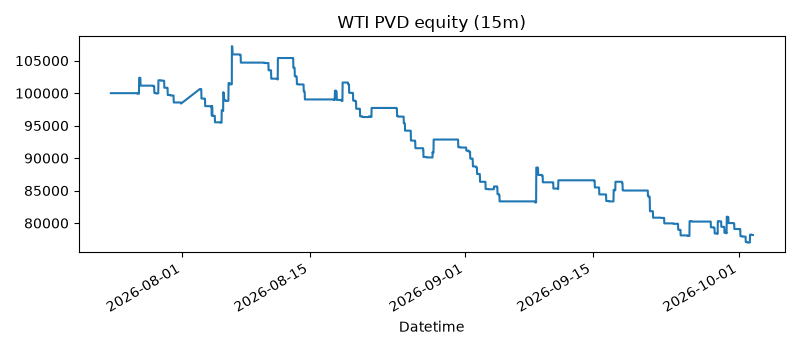
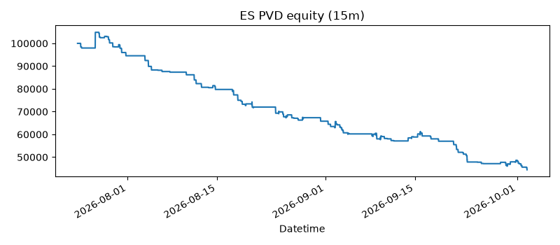
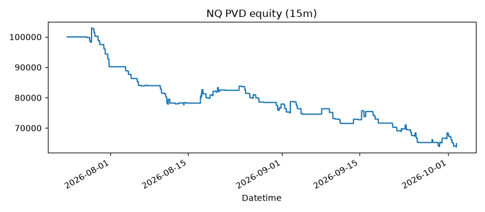
DAX longs +0.79R (+$19,766, n=30) vs shorts -0.26R (-$21,243, n=72). WTI longs +0.53R (+$14,297) vs shorts +0.01R. Power begets power — shorts subsidise longs even in a losing system.
DAX-covid +0.95R vs post-2021 -0.25R. WTI pre-2020 +$16,838 vs covid -$2,021 vs post -$853. Gating (like pausing oil 4 months) is rational.
S1 81–100% of signals, S2 0–6, S3 0–1. Matches “few trades/week, S3 best but rarest”. S3 needs years of 15m + profile data.
OHLC calibration yields all-large bases → “small zones best” untestable without secret geometry. 15m bleed fits trading through 14:00 US-open shift. Both scope PhD follow-ups.
yahoo (public) → data/*.parquet + manifest → add_features (ATR, trailing only) → detect_impulse / detect_bases (3-touch, small/med/large) → build_signals S1/S2/S3 (R≥3, causal ffill) → backtest (next-open, 1% risk, 30% partial→BE) → metrics / walk-forward / friction / benchmarks → results/*.csv + figures/*.png + assets/demo.* → preview.html (this page)
Code: src/nill_pvd/data.py ranges.py strategy.py backtest.py metrics.py validation.py benchmarks.py · Config: configs/experiment.yaml · Tests: tests/test_pvd.py (3 passing)
preview.html for the visual story, README.md for the paper.